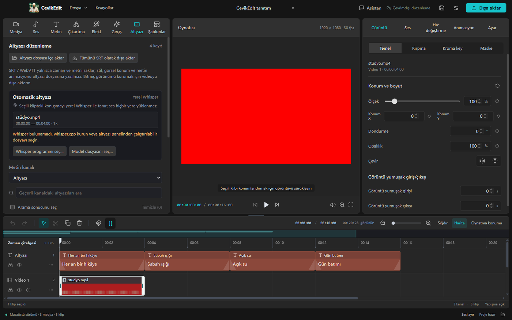
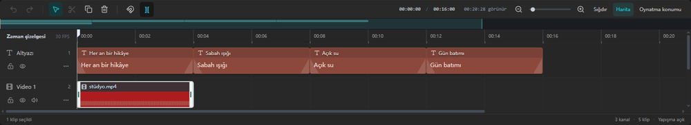
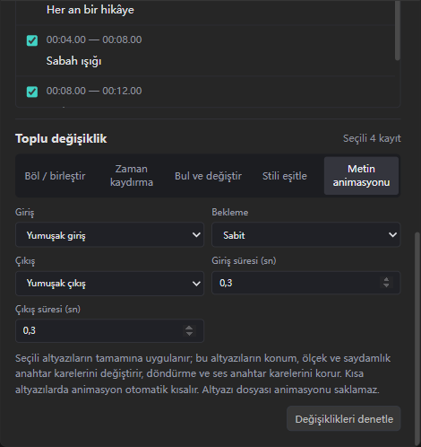
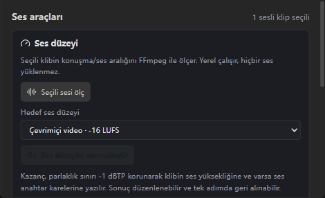
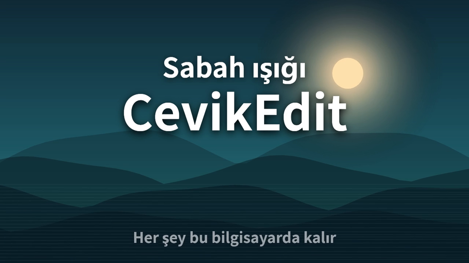
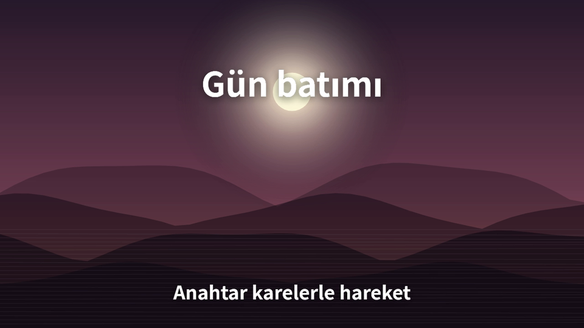
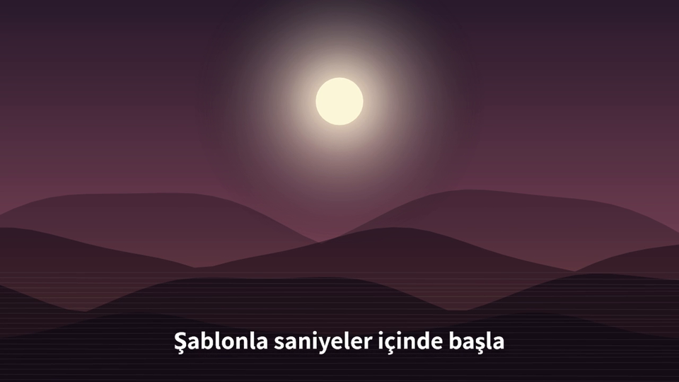

1 · Kurucuyu indir
Tek dosya, 200 KB. Yönetici izni istemez.
CevikEdit-Kurucu.exeCevikEdit; kesme, animasyon, altyazı ve ses düzenlemeyi tek bir masaüstü penceresinde toplar. Medyanız yüklenmez, hesap açmanız gerekmez. Tek gereken yerel FFmpeg — uygulamayla birlikte gelir.

Video düzenlemek için bulut hesabı şart değil. CevikEdit, tüm kurguyu kendi makinenizde tutan bir araç: dosya okuma, çözme, efekt ve kodlama yerel süreçlerde çalışır.
Ağ yok. Uygulama açıkken tek dış istek, siz istediğinizde yapılan güncelleme denetimidir. Proje, medya ve ses hiçbir sunucuya gitmez.
Kilitli format yok. Proje dosyası okunabilir JSON’dur
(.cevikedit). Şablonlar ve taşınabilir paketler de açık
biçimde; on yıl sonra da açabilirsiniz.
Abartı yok. Ne yaptığını ve ne yapmadığını bu sayfada aynı netlikte yazıyoruz. Sınırlar bölümü aşağıda.
Klibi tuttuğunuz yerden kaydırın; imlecin altındaki saniye hiç kaymaz. Ctrl + tekerlek yakınlaştırır, Shift + tekerlek yatay gezer, orta tuşla bıraktığınızda atalet devam eder.
401 klipli 4K proje: 978 ms açılış, 14 klip çizimi, 260 ms yakınlaştırma.

Hazır yumuşatma yeterli olmadığında iki tutamacı sürükleyin. Y ekseni 0–1 aralığının dışına çıkabilir; böylece başlık önce geri çekilir, sonra yerine oturur. Önizleme ve dışa aktarma aynı çözücüyü kullanır — ekranda gördüğünüz, dosyaya yazılanın ta kendisidir.
cubic-bezier(0.42, 0, 0.58, 1) Tutun ve sürükleyin

SRT veya WebVTT’yi içe alın; oynatma konumunda bölün, bitişik altyazıları tek satırda birleştirin, tümüne aynı stili ve aynı giriş–bekleme–çıkış hareketini uygulayın. Metin bölünürken yakındaki noktalama ve boşluk tercih edilir, kelime ortasından kesilmez.
SRT yalnızca zaman ve metin taşır. Stil ve hareket kalsın istiyorsanız videoyu dışa aktarın — arayüz bunu her seferinde söyler.
CevikEdit önce müziğin ses düzeyini ölçer, sonra konuşmayı arar. Algılama tamamen yerel: 20 ms’lik enerji pencereleri, gürültü tabanı ve histerezis ile gerçek cümle aralıkları bulunur. Müzik yalnızca o aralıklarda iner, cümle bitince geri gelir.
Sentetik kabul kaydı: üç konuşma bloğu ±150 ms içinde bulundu; sessizlik yanlışlıkla kısılmadı.

Aşağıdaki film CevikEdit ile üretildi: üç sahne, anahtar kareli yakınlaşma, beş Türkçe altyazı, ölçülmüş ve normalleştirilmiş müzik, konuşma altında kısılan ses. Proje dosyası ve şablonu da indirilebilir.
Videoyu indir · 2,3 MB


Küçük kurucu GitHub’daki en son sürümü bulur, indirir ve kurulumu başlatır. Arkadaşınıza 130 MB dosya göndermeniz gerekmez; 200 KB’lık bağlantı yeter.
Tek dosya, 200 KB. Yönetici izni istemez.
CevikEdit-Kurucu.exeKurucu sürümü sorar, indirmeyi gösterir. Dosya bittiğinde “Kur” butonu görünür. SmartScreen uyarısı çıkarsa “Diğer bilgiler → Yine de çalıştır”.
FFmpeg uygulama ile birlikte gelir. İlk açılışta proje oluşturun; güncellemeler sağ üstteki bildirimden gelir.
Kaynak kodumacOS paketi bu sürümde doğrulanmadı. Doğrulanmamış bir DMG yayınlamak yerine yalnızca Windows x64 yayınlıyoruz.
Bir aracı seçerken sınırlarını bilmek, özelliklerini bilmek kadar önemli. Aşağıdakiler bilinçli olarak dışarıda: